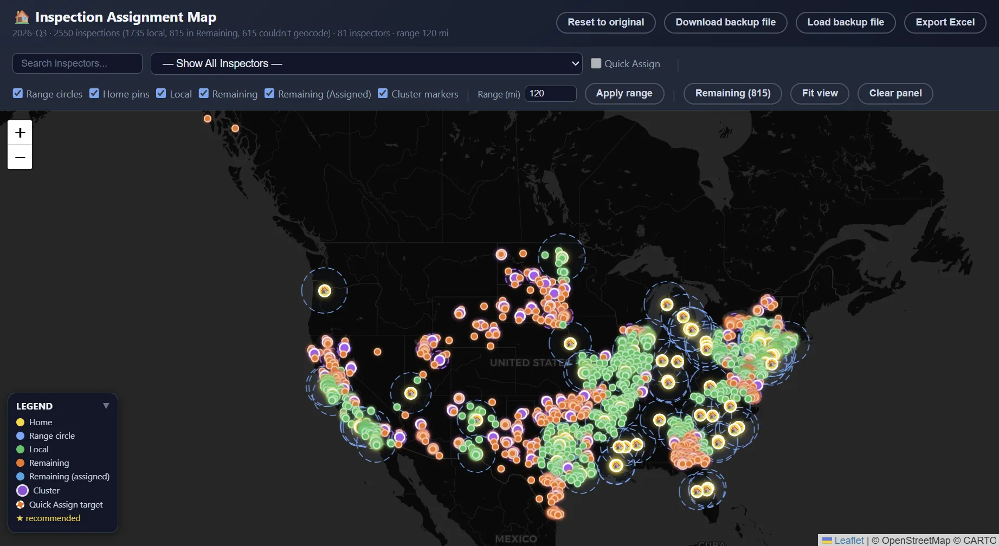

CMCS · Production System
An AI-assisted Python optimization engine that assigns roughly 5,000 field inspections to inspectors twice a year — balancing geography, workload, preferences, and operational constraints — cutting assignment turnaround from days to hours.
The Problem
CMCS assigns roughly 5,000 inspections across its inspector network twice a year. Before this system, a tool already generated those assignments, but it didn't weigh geographic proximity, inspector workload, and scheduling preferences together — so the results were often inefficient, parts of the process stayed tedious to run, and a full cycle still took multiple days without scaling as inspection volume grew.
The Approach
I designed a Python-based system that treats assignment as a real optimization problem — encoding geography, workload, and preferences as constraints and objectives, then producing assignments the operations team can act on directly, with no manual re-entry. It also layers in AI-assisted components alongside the core optimization logic (see below).

Inspection Assignment Map — a live run: 2,550 inspections across 81 inspectors, split into local coverage and remaining travel work, with adjustable per-inspector range and cluster markers grouping nearby travel inspections together.
Technical Implementation
Results
The new pipeline cuts assignment turnaround from multiple days to hours, and reduces the wasted travel and workload imbalance the old tool had no way to account for. Exact dollar savings aren't tracked yet, but less unnecessary travel and rework is a direct cost reduction for CMCS.
Confidentiality & Data
Portfolio demonstration: the screenshot on this page is from the real system, showing real aggregate figures — inspection counts, inspector counts, range settings. No inspector names, client names, addresses, or other identifying details appear anywhere in it; these are the kind of high-level operational numbers CMCS is comfortable sharing publicly.
What I Learned
Technologies